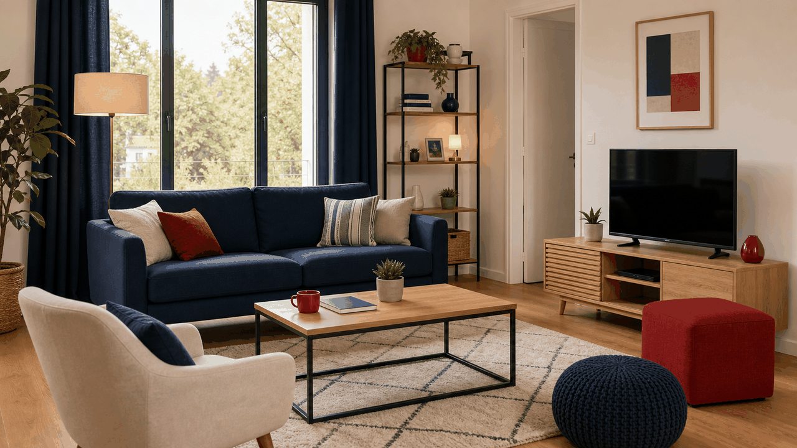
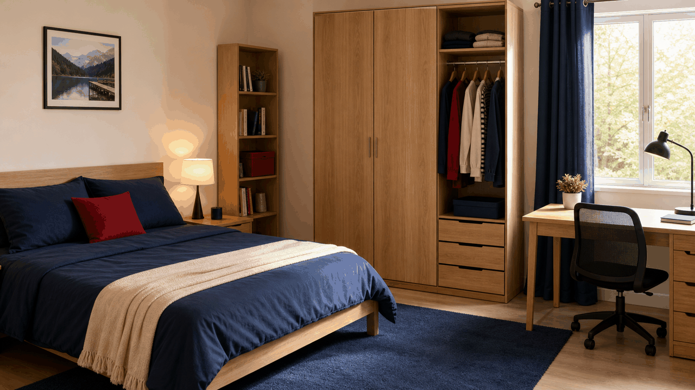
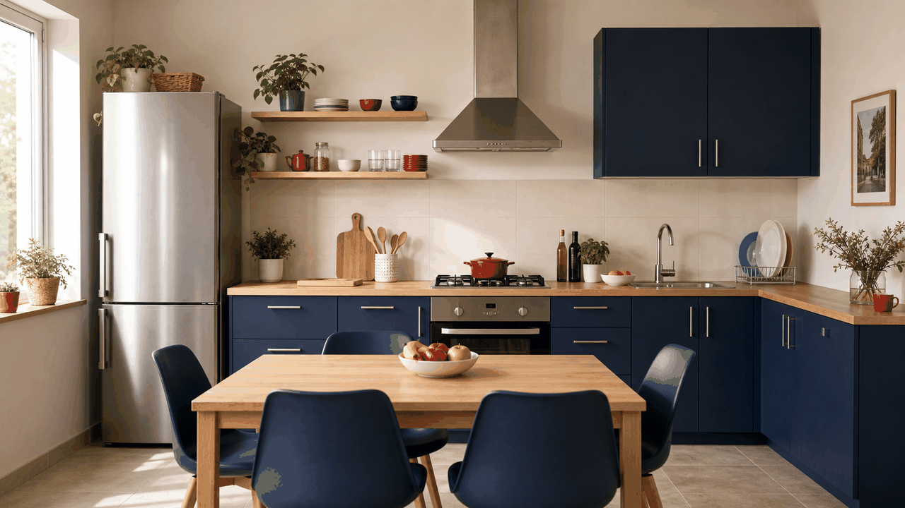
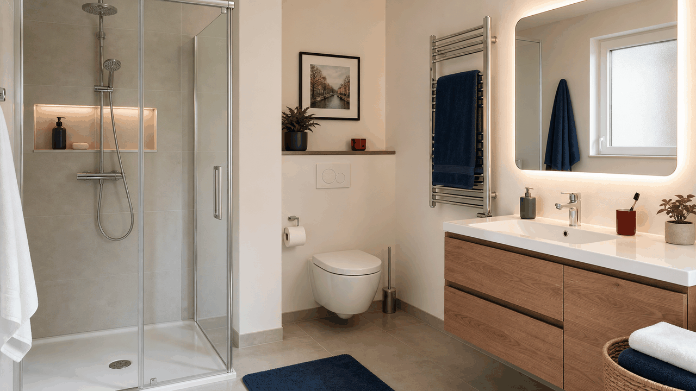
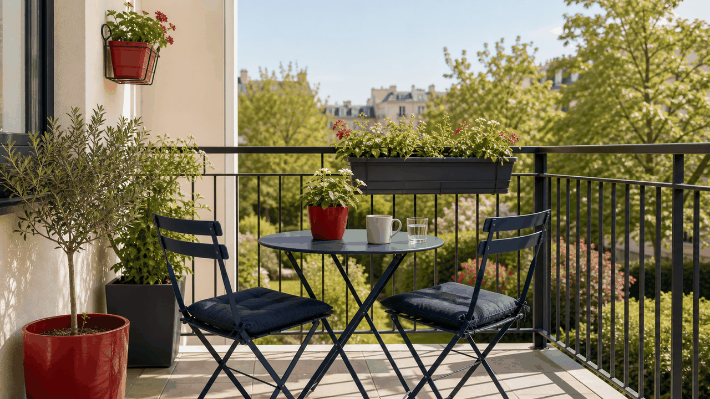
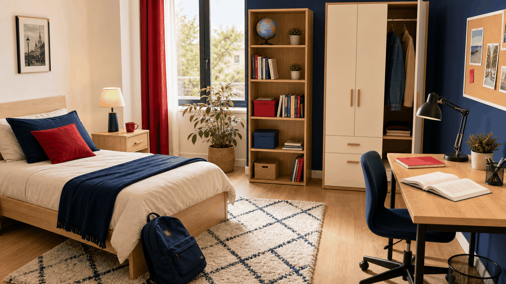
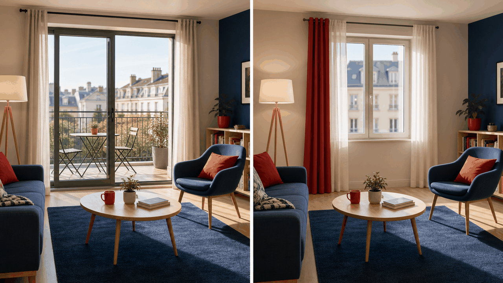
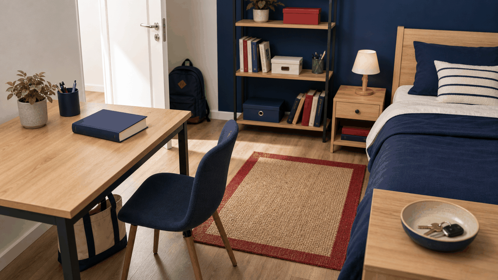

Objectif étudiant
Ce que vous devez savoir faire à la fin du thème
Vous devez pouvoir dire où vous habitez, nommer les pièces d’un logement, dire ce qu’il y a ou ce qu’il n’y a pas, et expliquer où se trouve un objet : Dans ma chambre, il y a un lit. Le bureau est près de la fenêtre. Il n’y a pas de télévision.
1 · Commencer par le logement
Dire où l’on habite
Pour parler de votre logement, utilisez d’abord habiter dans. À ce niveau, c’est la structure la plus simple et la plus utile.
MaisonJ’habite dans une maison.
AppartementElle habite dans un appartement.
StudioNous habitons dans un petit studio.
À retenir : habiter est un verbe en -ER. Vous connaissez déjà sa conjugaison : j’habite, tu habites, il habite, nous habitons...
2 · Les pièces de la maison
Nommer les espaces principaux
Le mot pièce signifie ici un espace de la maison : le salon, la cuisine, la chambre, la salle de bain.

le salonDans le salon
Dans le salon, il y a un canapé, une table basse, une lampe et un tapis.

la chambreDans la chambre
Dans la chambre, il y a un lit, une armoire, un bureau et une fenêtre.

la cuisineDans la cuisine
Dans la cuisine, il y a une table, des chaises, un réfrigérateur et un évier.

la salle de bainDans la salle de bain
Dans la salle de bain, il y a une douche, un lavabo, un miroir et une serviette.

le balcon · le jardinÀ l’extérieur
Il peut y avoir un balcon, un jardin, une table, deux chaises et des plantes.
3 · Les objets de la maison
Apprendre le vocabulaire par pièce
Le vocabulaire est plus facile quand il est associé à une image et à une pièce précise. On n’apprend pas seulement le mot : on apprend une phrase complète.
Salonun canapé · une table basse · une télévision · une lampe · un tapis
Chambreun lit · une armoire · un bureau · une chaise · une fenêtre
Cuisineune table · une chaise · un réfrigérateur · une cuisinière · un évier
Salle de bainune douche · un lavabo · un miroir · une serviette
Méthode : pour mémoriser, dites toujours le lieu avec l’objet : un lit dans la chambre, un canapé dans le salon, un miroir dans la salle de bain.
4 · Dire qu’une chose existe
Il y a = hay / existe

SingulierIl y a un lit.
FémininIl y a une lampe.
PlurielIl y a des livres.
Lieu + objetDans la chambre, il y a un bureau.
Important : il y a ne change pas avec le pluriel. On dit il y a une chaise et il y a deux chaises.
5 · Dire qu’une chose n’existe pas
Il n’y a pas de

PrésenceIl y a un balcon.
AbsenceIl n’y a pas de balcon.
VoyelleIl n’y a pas d’ordinateur.
AffirmatifIl y a une télévision. · Il y a des fenêtres. · Il y a un jardin.
NégatifIl n’y a pas de télévision. · Il n’y a pas de fenêtres. · Il n’y a pas de jardin.
Point délicat : après une négation de quantité, un / une / des devient généralement de ou d’.
6 · Situer dans l’espace
Dire où se trouve un objet

surLe livre est sur le bureau.
sousLe sac est sous la table.
à côté deLa lampe est à côté du lit.
entreLe tapis est entre le lit et le bureau.
SingulierLe livre est sur le bureau.
FémininLa chaise est devant le bureau.
PlurielLes clés sont dans le sac.
7 · Poser des questions
Demander ce qu’il y a et où se trouve quelque chose
Qu’est-ce qu’il y a dans la chambre ?
Dans la chambre, il y a un lit et un bureau.
Est-ce qu’il y a un balcon ?
Oui, il y a un balcon. / Non, il n’y a pas de balcon.
Où est le livre ?
Le livre est sur le bureau.
Combien de chambres il y a ?
Il y a deux chambres.
9 · Décrire un logement complet
Modèle final
J’habite dans un petit appartement. Il y a un salon, une cuisine, une salle de bain et une chambre. Dans le salon, il y a un canapé et une table basse. Le canapé est devant la télévision. Dans ma chambre, il y a un lit et un bureau. Le bureau est près de la fenêtre. Il n’y a pas de jardin, mais il y a un balcon. Mon appartement est petit, mais lumineux et confortable.
Erreurs fréquentes
À corriger dès le début
Dans ma maison a trois chambres. → Dans ma maison, il y a trois chambres.il y a
Ils y a deux chaises. → Il y a deux chaises.invariable
Il n’y a pas un balcon. → Il n’y a pas de balcon.de
Les clés est sur la table. → Les clés sont sur la table.pluriel
C’est une table dans la cuisine. → Il y a une table dans la cuisine.existence